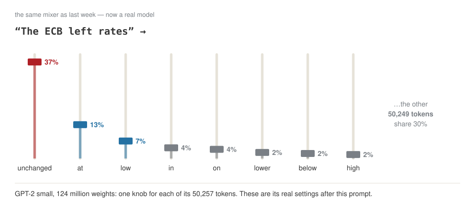
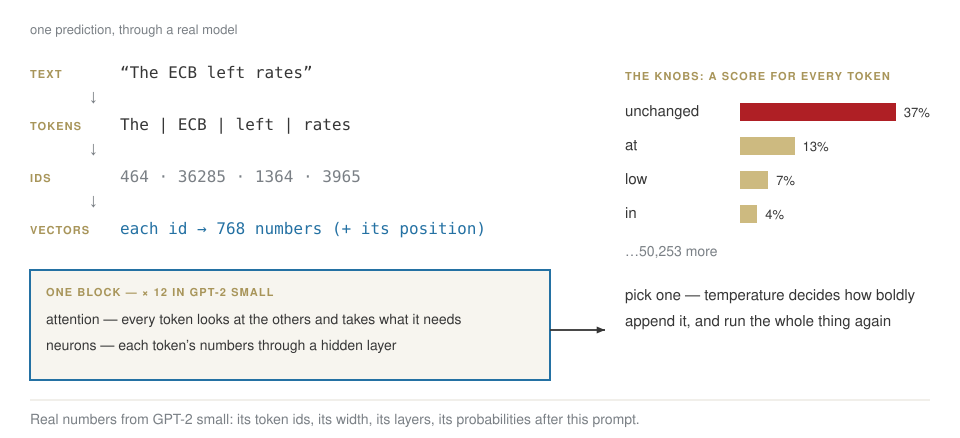
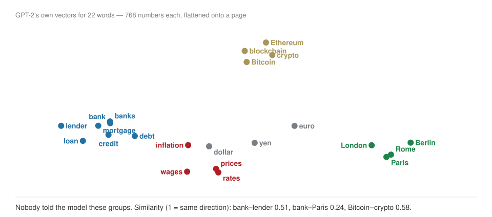
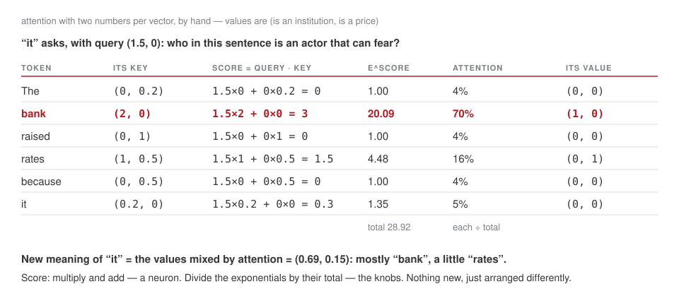
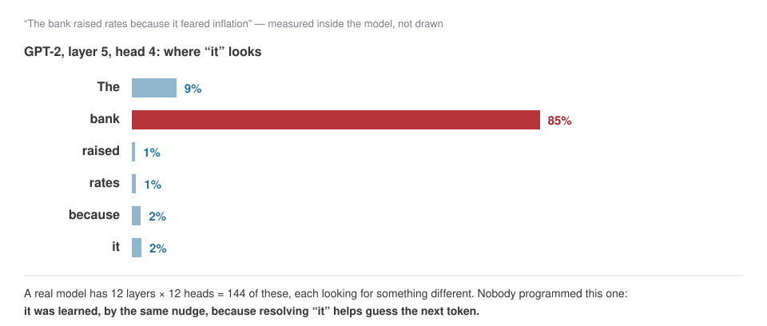
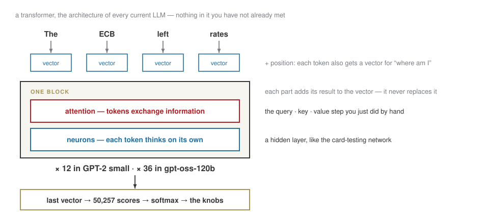
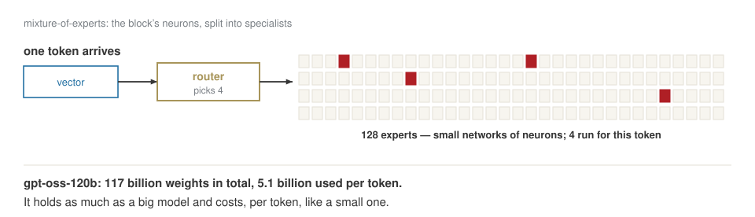

Inside an LLM
Week 2 · Wednesday 30 September 2026 · 10:00–13:00
AI for Business and FinTech · European School of Economics, Florence
Today
| 10:00 | last week in one slide · your starting point |
| 10:20 | finishing the network: learning rate, hidden layers, scale |
| 10:45 | the same machine, on text — and a real model’s knobs |
| 11:05 | break |
| 11:15 | inside: tokens, embeddings, attention, the transformer, temperature |
| 12:10 | training at scale, and running it |
| 12:30 | what it cannot do · the release, decoded |
| 12:50 | homework · three lines |
Last week, in one slide
A neuron: multiply each answer by a weight, add a bias, squash. Eight payments taught it “two red flags” in three rounds.
The loss is one number for how wrong it is — the average over all payments.
The formula: w \leftarrow w - \eta\,(p-y)\,x — for every weight, after every example.
Backpropagation finds each weight’s share of the blame, box by box, right to left.
Your starting point
Homework 1: the question you want answered by December — in two minutes, as if to a manager.
Part 1 Finishing the network
The learning rate
Add payment I — a customer on holiday: large, abroad, genuine — and no rule is perfect. Too small a step crawls; too large jumps over the best answer.
How every network learns

A pattern one neuron cannot draw

More activation functions

From 4 numbers to 117 billion

Part 2 The same machine, on text
An LLM is the same machine

The same nudge, on text
A mixer: one knob per possible next token. Each sentence turns the right knob up a little — the step we took on payment E.
Where the knobs end up

A real model’s knobs
Bet
After “The ECB left rates”, how sure is a real model that the next word is “unchanged”?

Break — ten minutes.
Part 3 Inside
One prediction, end to end

Five steps, one at a time for the rest of the morning: tokens → vectors → attention → the block, stacked → the knobs.
1 · Tokens: how a tokenizer is learned
Find the pair of symbols that appears most often; give it a name; repeat.
| merge | pair seen most often | times | new piece | text length |
|---|---|---|---|---|
| start | 127 | |||
| 1 | a + n |
6 | an |
121 |
| 2 | s + _ |
5 | s_ |
116 |
| 3 | e + _ |
4 | e_ |
112 |
| 4 | r + a |
4 | ra |
108 |
| 5 | ra + t |
4 | rat |
104 |
| 6 | rat + e |
4 | rate |
100 |
| 7 | rate + s_ |
4 | rates_ |
96 |
| 8 | t + h |
3 | th |
93 |
On a text about rates, rates_ becomes one piece after seven merges. Trained mostly on English, a tokenizer learns English pieces — so Russian costs more.
Your tiny LLM, piece 1
LAB · session.ipynb § 1
- Run the merges on the text about rates. Check the table.
- Paste a paragraph of your own — English, then Russian. 30 merges each.
- How many symbols per word, in each language?
2 · Vectors: meaning becomes a place
Each token becomes a list of numbers — 768 in GPT-2 — learned by the same nudge as every other weight.

3 · Attention: the tokens talk to each other
Each token asks a question (query), each token shows a label (key), and gives what it carries (value). Good match → more of it.
The same, as a table

And inside a real model

Vaswani et al., Attention Is All You Need, 2017 — the paper behind every model since.
4 · The transformer: one block, stacked

5 · The knobs, and how boldly it picks
Temperature divides every score before the softmax. On GPT-2’s real knobs, after “The ECB left rates”:
| next token | T = 0.5 | T = 1 | T = 2 |
|---|---|---|---|
| unchanged | 83.9% | 37.1% | 2.4% |
| at | 10.2% | 13.0% | 1.4% |
| low | 2.7% | 6.7% | 1.0% |
| in | 1.0% | 4.1% | 0.8% |
| on | 0.8% | 3.5% | 0.7% |
At T = 2 the 50,257 tokens are spread so flat that “unchanged” drops to 2%. T = 0 always picks the top token: the same answer every time.
One token at a time
T = 0 (always the top knob): The ECB left rates unchanged at 0.5 percent in June, but the ECB
T = 1, three runs:
- The ECB left rates up to 32 per cent in London unchanged at 20 basis points
- The ECB left rates unchanged last week down between 8 and 12 basis points. This
- The ECB left rates at its previous entry level in 2005. Close to a three
Each word is picked, appended, and the whole machine runs again. Nothing is looked up: “0.5 percent in June” is a number that fits, not a fact.
Look inside a real one
LAB · session.ipynb § 2–4
- Attention by hand, in numpy — the table you just saw.
- Load GPT-2 in Colab. Your own prompt: read its top eight knobs.
- Generate at T = 0, then three times at T = 1. Which sentences are facts?
Part 4 Training at scale, and running it
Pre-training is compressing the internet

Three stages, the same loop
| stage | the “right answer” in the loop | what comes out |
|---|---|---|
| pre-training | the next token of internet text | a base model: it continues documents |
| supervised fine-tuning | the next token of good example conversations | an assistant |
| reinforcement learning | whatever earns a higher reward score | an assistant that works problems through — “reasoning” |
The formula never changes: w \leftarrow w - \eta \cdot blame. Only what counts as right does.
The box has a size, and a price

Every token attends to every other: twice the context, four times the attention work. That is why long prompts cost more than they look.
Big, but cheap to run

Fitting it on one machine
| each of 117 billion weights stored in | memory needed |
|---|---|
| 16 bits (2 bytes) | ≈ 234 GB — several GPUs |
| ~4 bits (MXFP4) | ≈ 62 GB — one 80 GB GPU |
Quantization: store each number with less precision. A little accuracy for a lot of memory.
Part 5 What it cannot do
Four limits that follow from the machine
| what you see | why, from what we built |
|---|---|
| a confident, invented number | there is always a top knob — even when the fact was never in the data |
| no knowledge after a date | the weights are frozen at the end of training |
| knows A → B, not B → A | it learned to continue text in one direction |
| bad at spelling and arithmetic | it sees tokens, not letters or digits |
Every one of these is why, from week 4, we give it documents to read and tools to call.
Two piles
LAB · session.ipynb § 5
Ask your assistant about a real company. Split every sentence:
Verifiable — a number, a date, a name, a source you can open
Plausible — fluent, confident, and nothing to check it against
Then check two from the left pile against the company’s own report.
The release, decoded
“Each model is a Transformer which leverages mixture-of-experts to reduce the number of active parameters needed to process input. gpt-oss-120b activates 5.1B parameters per token … The models have 117b and 21b total parameters …
We tokenized the data using … o200k_harmony … The models were post-trained … including a supervised fine-tuning stage and a high-compute RL stage. … The weights … are freely available … and come natively quantized in MXFP4. This allows for the gpt-oss-120B model to run within 80GB of memory … Available under the flexible Apache 2.0 license.”
Spec table: context length 128k.
Circle again. Which words are still dark?
Close
Homework 2, due Tue 6 Oct, in your Drive folder week-02/:
- GPT-2 on three prompts of yours: the knobs, and four generations
- your tokenizer on English and Russian
- another model release, decoded word by word
- a first look at next week’s data: 284,807 real card payments
Before you leave: three lines at the bottom of the notebook, in your words.
Next week: real fraud data, from the raw file to a model — and whether the model is any good.
AI for Business & FinTech · ESE Florence